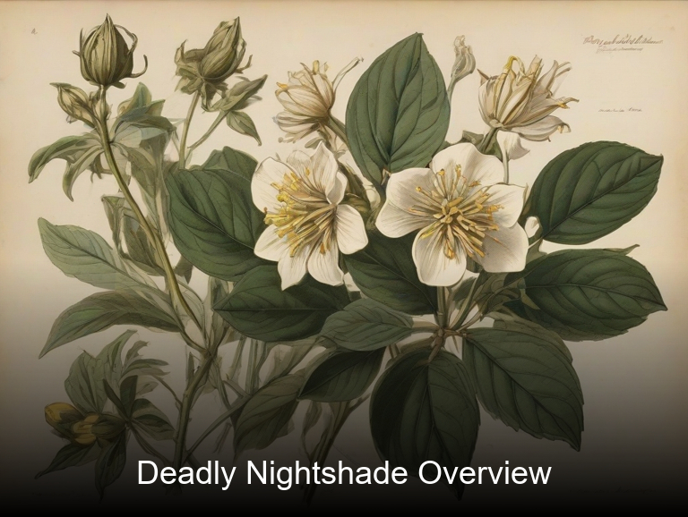
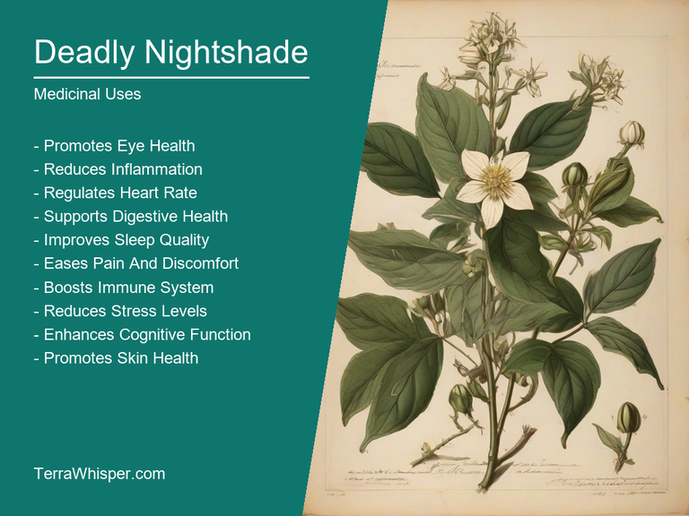
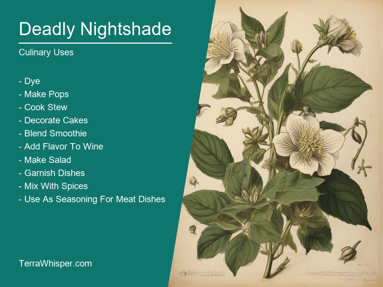
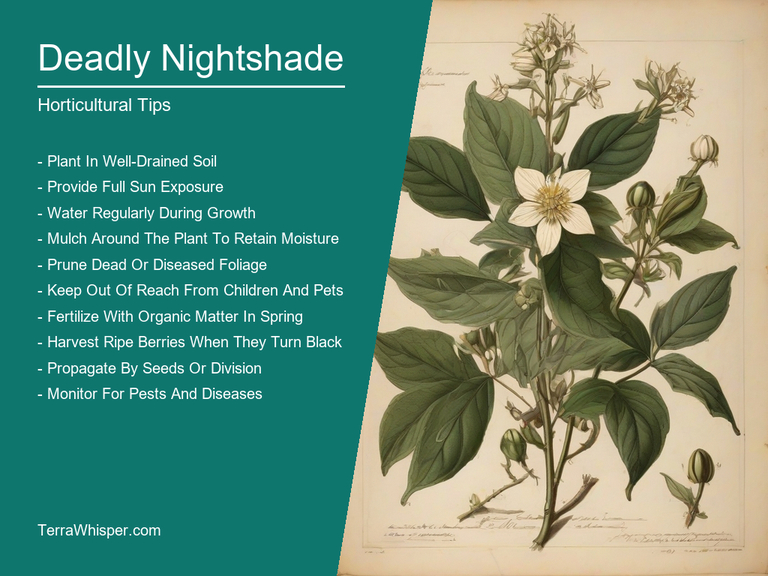
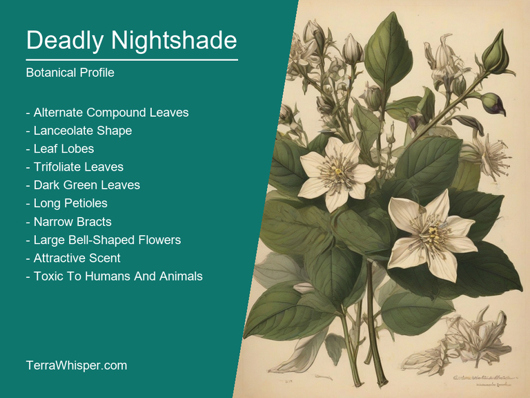
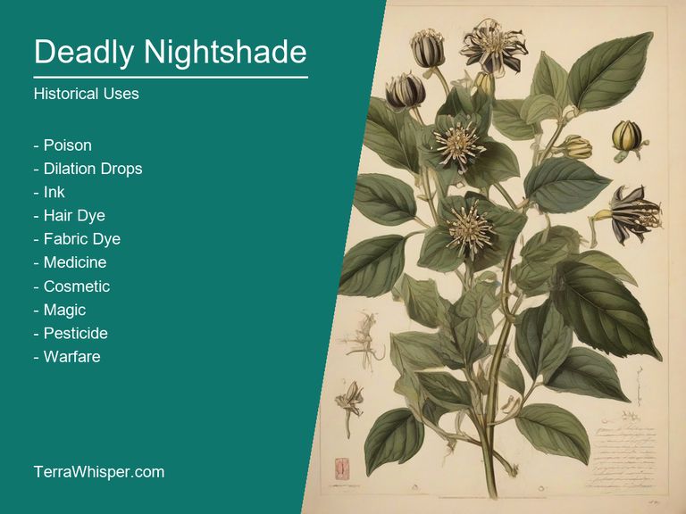

Deadly Nightshade, scientifically known as Atropa belladonna, is a highly poisonous plant that has been used in traditional medicine for centuries. The berries, leaves, and seeds contain toxic alkaloids, which can cause severe illness and even death if ingested. Despite its lethal properties, some people use Deadly Nightshade to make eye drops that dilate the pupils, giving them a seductive appearance. In addition, the plant's extract is used in ointments for eye problems, such as conjunctivitis and glaucoma.
As an ornamental plant, Deadly Nightshade grows up to six feet tall and features dark green leaves with white flowers that bloom from summer through early fall. The plant prefers moist, well-drained soil and partial shade but can adapt to various growing conditions. Its vivid blue or violet fruits attract birds and insects, providing an essential food source for wildlife. However, the berries should never be consumed by humans or animals as they contain lethal amounts of poisonous alkaloids.
Botanically, Deadly Nightshade belongs to the Solanaceae family, which also includes other well-known plants like tomatoes, potatoes, and eggplants. Historically, this plant has been used for various purposes throughout history. In ancient Rome, women applied Deadly Nightshade extract to their eyes before attending public events to dilate their pupils and appear more attractive. Meanwhile, in medieval Europe, people used the plant's roots as a natural anesthetic during surgeries due to its potent pain-relieving properties.
In this article, you will discover what are the medicinal and culinary uses of deadly nightshade. Then, you'll learn how to cultivate it, what is its botanical profile, and how it was used historically.
Deadly nightshade (Atropa belladonna) has many health benefits, including its use as an antispasmodic and sedative agent for treating conditions like asthma, muscle spasms, and seizures. It also acts as a pain reliever and may be beneficial in easing migraines. This medicinal plant is known to possess various alkaloids such as atropine, scopolamine, and hyoscyamine that interact with the nervous system to bring about these effects.
The following illustration lists the most important uses of deadly nightshade in medicine.

The primary constituents that confer Atropa belladonna its therapeutic properties are alkaloids like atropine, scopolamine, and hyoscyamine. These compounds have a significant impact on the body's autonomous nervous system, which regulates involuntary bodily functions such as heart rate, digestion, and respiration. As muscarinic antagonists, they block the action of acetylcholine at muscarinic receptors in parasympathetic nerves, thus affecting the balance between excitatory and inhibitory neurotransmitters.
The most used parts for medicinal purposes are often either the leaves or the roots, as both possess alkaloid-rich properties. Commonly, preparations from these plant parts can be made into teas, tinctures, extracts, salves, balms, and ointments. These remedies may then be applied topically to treat skin conditions such as burns, wounds, eczema, or insect bites. Alternatively, some traditional medicinal systems use atropa belladonna internally in the form of capsules, tablets, or liquid extracts for treating ailments like respiratory issues and spasms.
Although Atropa belladonna is believed to have numerous health benefits due to its potent alkaloid composition, it can also pose certain risks. The plant's toxicity may lead to side effects such as confusion, hallucinations, dizziness, rapid heartbeat, and even paralysis if consumed or used incorrectly in large amounts.
To minimize the risk of adverse reactions and ensure safe use, it is crucial to follow precautions when utilizing Atropa belladonna medicinally. Consult with a medical professional before incorporating any form of this plant into your treatment plan, especially if you have pre-existing health conditions or are already on prescribed medications. Be mindful of potential drug interactions and monitor for any signs of allergic reactions or other negative side effects when using Atropa belladonna products.
Deadly Nightshade (Atropa belladonna) has been used in culinary history, primarily for its dark purple berries that have a rich, sweet flavor. The plant is native to Europe and Asia, but can also be found in North America. Its leaves, stems, seeds, and roots are all edible, although they contain alkaloids which can cause severe side effects if consumed in large quantities.
The following illustration lists the most common uses of deadly nightshade for culinary purposes.

In terms of flavor profile, Deadly Nightshade's berries taste sweet with a hint of bitterness. The leaves have a slightly bitter taste while the stems and roots are more neutral. Some chefs use this plant for its unique flavors to add depth to their dishes.
The edible parts of Deadly Nightshade include its ripe berries, leaves, stems, seeds, and roots. However, one should be cautious when consuming these as they contain alkaloids such as atropine and scopolamine which can cause poisoning if ingested in large amounts.
If using Deadly Nightshade in cooking, it is crucial to handle the plant with care. Always wear gloves while handling the plant and wash your hands thoroughly after touching any part of it. Cooking methods like boiling or baking can help break down some of these harmful alkaloids but it's still important not to overdo it.
Despite its culinary uses, consuming Deadly Nightshade carries potential risks due to the presence of toxic alkaloids. Symptoms of poisoning include dilated pupils, blurred vision, dry mouth, confusion, hallucinations, rapid heart rate, and seizures. In severe cases, it can lead to coma or death. Therefore, it's essential to eat Deadly Nightshade sparingly and responsibly, ideally under the guidance of an experienced chef or herbalist.
Deadly Nightshade is an infamous plant known for its toxic properties; it can be cultivated and propagated with caution, though. The plant thrives best in rich, moist soil with a pH level between 6.0 and 7.0. It requires partial shade to full sun exposure (with at least 4-5 hours of direct sunlight per day). Deadly Nightshade can be grown from seed or by dividing the roots. If you're propagating through seeds, plant them in a prepared bed during early spring and keep the soil moist until germination occurs, which usually takes around 14 to 21 days. If growing via division, divide the roots into small pieces and replant immediately, spacing each piece about 30 cm apart.
The following illustration lists the most important tips to cutlitvate deadly nightshade.

Ideal growing conditions for Deadly Nightshade include well-drained soil that's rich in organic matter. The plant prefers a location with partial shade to full sun exposure (at least 4-5 hours of direct sunlight per day). It also requires regular watering, especially during the flowering period and should be mulched to retain moisture and suppress weed growth. The optimal temperature range for its growth is between 18°C to 20°C during the day and 10°C to 15°C at night.
Maintenance of Deadly Nightshade involves regular pruning to maintain its shape and size. Pinching back the tips of young shoots can encourage branching, leading to a bushier plant. In addition, removing dead or diseased leaves promptly helps prevent the spread of infection among other plants. To ensure healthy growth, fertilize the plant every two months using a balanced liquid fertilizer diluted at half strength. Monitor for pests and diseases, but note that due to its toxic properties, it is rarely affected by any significant issues.
Deadly Nightshade, with botanical name Atropa belladonna, belongs to the domain Eukarya, kingdom Plantae, phylum Tracheophyta, class Magnoliopsida, order Solanales, family Solanaceae, genus Atropa, and species belladonna. Common names include Belladonna, Deadly Nightshade, Devil's Cherries, and Dew of the Dark.
The following illustration display the botanical profile of deadly nightshade.

Deadly Nightshade is a perennial herbaceous plant that can grow up to 1-2 meters in height. Its leaves are alternate, simple, and oval-shaped with serrated margins. The flowers are bell-shaped, usually white or pinkish-purple, and borne on racemes. The fruit is a small berry-like capsule containing numerous seeds.
There are no significant variants of Deadly Nightshade; however, some plants may exhibit differences in leaf size and shape, flower color, and the density of hair coverage on stems and leaves due to environmental factors or genetic variation.
Deadly Nightshade is native to Europe, Western Asia, and North Africa but has been introduced to other parts of the world including North America, South America, Australia, and New Zealand. It thrives in damp woods, hedgerows, meadows, and waste places.
The life cycle of Deadly Nightshade starts with seeds germinating during late spring or early summer. The plants grow rapidly and produce flowers within one growing season. After pollination, the fruits mature and disperse their seeds through animal consumption and wind dispersal.
The traditional medicine of Deadly Nightshade has been widely documented throughout history. Its active compounds, such as atropine and scopolamine, have been used for various therapeutic purposes. For instance, in ancient Greece, belladonna was applied topically to dilate pupils, giving women a seductive appearance. Additionally, it has been employed as an analgesic, antispasmodic, and muscle relaxant in traditional medicine systems worldwide.
The following illustration lists the most well known historical uses of deadly nightshade.

Deadly Nightshade holds significance in the realm of divination. The plant's dark reputation is not solely due to its toxicity but also its association with mysticism and supernatural beliefs. As believed by many cultures, its poisonous nature could be harnessed for divinatory purposes - especially in witchcraft practices. For example, some witches would use the deadly berries to brew potions or cast spells that induced visions or trances. This unique aspect of Deadly Nightshade adds another layer to its historical significance.
Several legends surround this infamous plant. One such legend revolves around the origin of its name, Atropa belladonna. It is said that Atropos, one of the three Fates in Greek mythology, was responsible for cutting the thread of life when it was time for mortals to die. In her honor, the plant was named Atropa belladonna, symbolizing death and fatal beauty. Another legend tells of the deadly nightshade being used as an ingredient in poisonous concoctions during the infamous Salem Witch Trials in 1692. This connection between Deadly Nightshade and witchcraft further solidifies its place in historical lore.